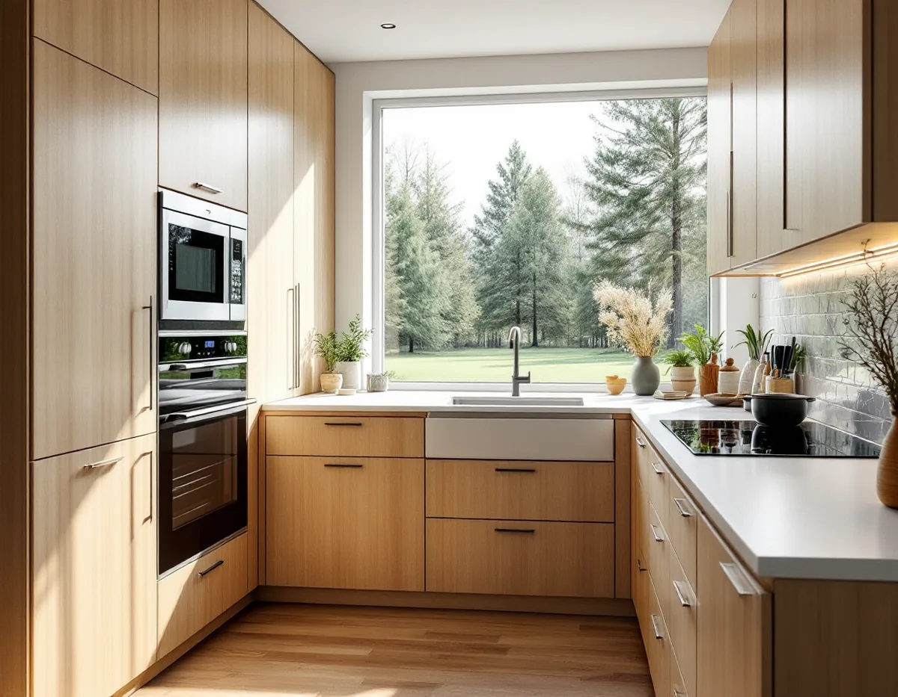
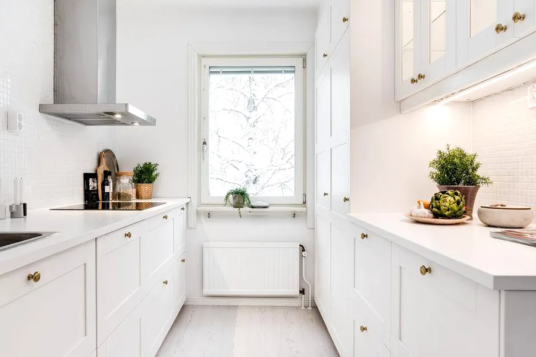

Platsbesök
Vi mäter köket, ser var stam och imkanal går och pratar om hur köket ska fungera på sikt.
I Tullinge är knappt var tionde bostad en hyresrätt, så den som vill bo kvar när åren går gör det ofta genom att anpassa sitt eget hus. Köket är ett av de rum där det märks mest. Geal Entreprenad AB gör om kök i Tullinge, Tumba och övriga Botkyrka, med gratis platsbesök, skriftligt kostnadsförslag och ROT-avdraget direkt på fakturan.

Kommunens utvecklingsprogram Framtid för Tullinge från 2010 konstaterar att bostadsutbudet i Tullinge bara till knappt 10 procent består av hyresrätter. Programmet nämner äldre som vill flytta från villan till ett bekvämare boende, och att det byggs många bostäder i stadsdelen, mest spridda enskilda småhus.
När det är ont om andra boendeformer blir det vanligare att man i stället anpassar huset man redan har. I köket handlar det om arbetshöjder, om att ha det man använder mest mellan höft- och axelhöjd, om bra belysning över bänken och om utrymme att röra sig mellan skåpen. Det mesta av det är planering och kostar lite extra om det görs samtidigt med en renovering.
Vi frågar därför tidigt hur länge du räknar med att bo kvar och vem som lagar mat. Ett kök som fungerar om tjugo år ser ofta likadant ut som ett annat kök, men med skåp, belysning och el placerade på ett annat sätt.

Botkyrka kommun ger bidrag för att anpassa bostaden till den som har en bestående funktionsnedsättning och behöver anpassa sin permanenta bostad. Behovet ska styrkas med ett intyg från till exempel en arbetsterapeut, och det ska finnas ett direkt samband mellan anpassningen och funktionsnedsättningen. Bidraget kan inte användas till normalt underhåll eller renovering.
Vid enklare anpassningar, som installation av en spisvakt, krävs ingen offert. Vid större åtgärder ska du vända dig till bostadsanpassningen innan du tar in en offert, så att kommunen kan kontrollera att företaget är seriöst. Kommunen skriver att bidraget annars riskerar att inte betalas ut. Det är du som beställer arbetet, och konsumenttjänstlagen gäller mellan dig och entreprenören.
Görs anpassningen samtidigt som köket renoveras behöver de två delarna hållas isär. Skatteverket skriver att du inte kan få rotavdrag för arbete som du får bidrag eller annat ekonomiskt stöd för från kommunen. Vi delar därför upp kostnadsförslaget så att det syns vad som är anpassning och vad som är renovering.
På kommunens sida om flytt av kök eller badrum står att det ska finnas en imkanal i ett matlagningsutrymme för att kraven på frånluft ska uppfyllas. Att använda den befintliga imkanalen i köket ses inte som en väsentlig ändring av ventilationen och kräver ingen anmälan, men nya aggregat, fläktar eller kanaler som påverkar flöden eller luftkvalitet gör det.
Kommunen tar också upp håltagning i bjälklag: är du osäker på om ett hål påverkar den bärande konstruktionen ska en konstruktör bedöma det, och berörs bärande delar krävs anmälan. En ny VA-stam i ett nytt schakt är en väsentlig ändring, medan rördragning för att ansluta till en befintlig stam normalt inte är anmälningspliktig.
Kommunen påpekar att sidan håller på att uppdateras efter de nya bygglovsreglerna från den 1 december 2025. Vi stämmer därför av med kommunen när ett kök ska flyttas längre bort från stammen.
Södertörns brandförsvarsförbund, som ansvarar för räddningstjänsten i Botkyrka, beskriver på sin sida om brandskydd i radhus att byggreglerna kräver att en brand inte ska kunna spridas mellan lägenheter inom 60 minuter, men att många radhus har brister som gör att den sprids fortare än så. En orsak är genomföringar för antennkablar och ventilationsrör som gjorts i efterhand och inte tätats rätt.
Förbundet rekommenderar att genomföringar och hål tätas med brandklassad tätningsmassa och påpekar att det är fastighetsägarens ansvar att se över brandskyddet. När en ny köksfläkt i ett radhus får ett rör som går över vinden ser vi till att det inte passerar den avskiljande väggen mot grannen och att genomföringen genom bjälklaget blir tät.
Ska röret ut genom taket görs genomföringen så att taket förblir tätt; läs mer under takläggare i Botkyrka. Ska badrummet göras om samtidigt, se badrumsrenovering i Botkyrka.
Vi mäter köket, ser var stam och imkanal går och pratar om hur köket ska fungera på sikt.
Söker du bostadsanpassningsbidrag tar du kontakt med kommunen innan offerten tas fram.
Anpassning och renovering redovisas var för sig, liksom arbete och material.
Gamla skåp tas bort och rör, el och fläkt dras enligt den nya planen.
Stomme, bänkskiva och vitvaror monteras på de höjder vi bestämt tillsammans.
Vi provar fläkt, spis och belysning och går igenom köket med dig.
Att montera köksinredning och vitvaror vid en omfattande renovering, modernisera elen och dra vatten och avlopp ger rotavdrag i ett småhus. Avdraget är 30 procent av arbetskostnaden, högst 50 000 kr per person och år och högst 75 000 kr tillsammans med rutavdrag.
Arbete som betalas med bostadsanpassningsbidrag ger inget rotavdrag. Vi skriver anpassning, renovering och material var för sig och drar avdraget direkt på fakturan.
Om köket stannar vid stammen och den befintliga imkanalen, om skåp och vitvaror ska placeras på nya höjder, hur mycket ny el som behövs och om en fläktkanal ska dras över vinden i ett radhus. Efter ett gratis besök får du ett skriftligt kostnadsförslag.
Planering, el, VVS, fläkt och väggar.
Köksrenovering i Stockholm →Takbyte, takbesiktning och plåtarbeten.
Takläggare i Botkyrka →Tullinge, Uttran och Tumba.
Takrenovering i Botkyrka →Flytt av badrum, stammar och frånluft.
Badrumsrenovering i Botkyrka →Nytt hus, utfart och byggarbetsplats.
Byggföretag i Botkyrka →Fönstertyper per epok i Botkyrkas villor.
Fönsterbyte i Botkyrka →Kataloghus, källargolv och trägolv.
Golvläggare i Botkyrka →Tidstypiska kulörer från 1960-tal till gamla byar.
Målare i Botkyrka →Rännor, stuprör och plåttak i Botkyrka.
Plåtslagare i Botkyrka →Altan, plank och förråd i villaområdena vid järnvägen.
Snickare i Botkyrka →Ny tapet på träfiberskivor och gamla lager.
Tapetsering i Botkyrka →